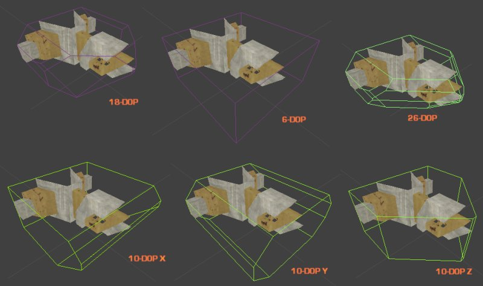
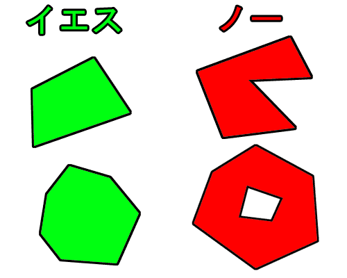
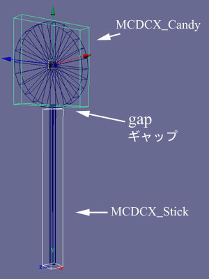
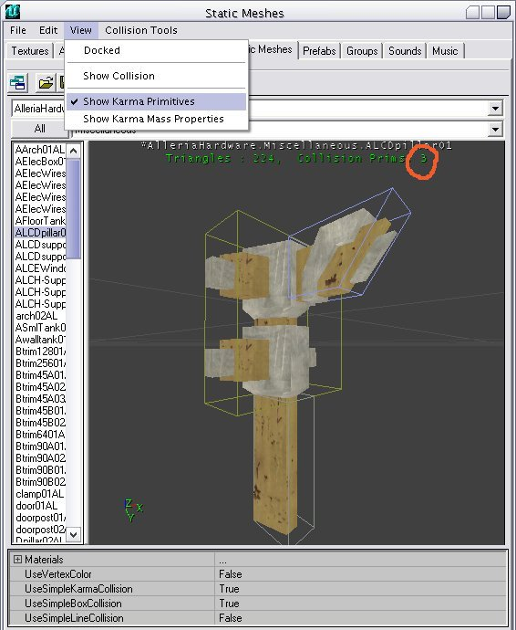
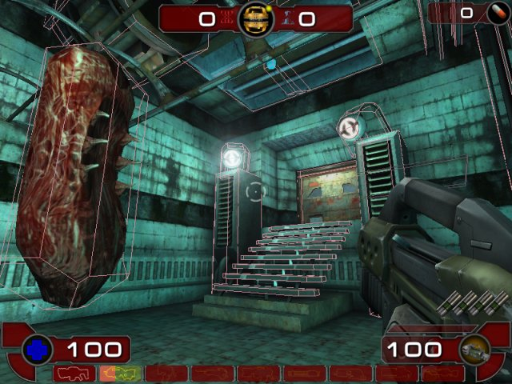
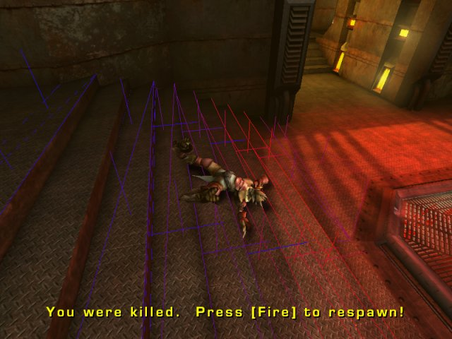

UDN
Search public documentation:
CollisionTutorialJP
English Translation
Interested in the Unreal Engine?
Visit the Unreal Technology site.
Looking for jobs and company info?
Check out the Epic games site.
Questions about support via UDN?
Contact the UDN Staff
Interested in the Unreal Engine?
Visit the Unreal Technology site.
Looking for jobs and company info?
Check out the Epic games site.
Questions about support via UDN?
Contact the UDN Staff
衝突チュートリアル
ドキュメントの概要： Unreal Ed での衝突に関する入門書です。 ドキュメントの変更ログ： v3323 のための更新で、Michiel Hendriks により最後に更新。それ以前に、衝突文書へのリンクのために、2003年11月3日に Chris Linder (Main.DemiurgeStudios) により更新。オリジナル作成者、James Golding (jamesg@epicgames.com)、2002年10月22日に作成。関連文書
StaticMeshCollisionReference (静的メッシュ衝突リファレンス)、KarmaReference (Karma リファレンス)、静的メッシュ のチュートリアル衝突の概要
このチュートリアルは、エンジンの 3323 ビルド用です。本書の情報の大部分は、ほとんどの Unreal Engine 2 ゲームに関連しており有益ですが、本書に記載のない相違点が存在する可能性が有ります。 Unreal レベルの外観をすばらしいものに仕上げるのと同じくらい、レベルでの衝突に時間を割くことには値打ちがあります。チュートリアルが終わった後、UT2004 マップのいくつかを見て、説明されている方法がどのように使用されているかを調べてみてください。 BSP レベルとテレインとの衝突は、さして微調整することなく、うまく機能する必要があります。しかし、静的メッシュとの衝突には、いくらかの最適化が必要な場合があります。単純に、関係するトライアングルの数が非常に多いためです。ここでの主な仕事は、グラフィクスよりも衝突に対してより単純なシェイプを使用することです。これには ２ つの理由があります。- より速い - カレントのレベルにあるトライアングルの数で、グラフィクスを使用すると、衝突のためにトライアングルが、きわめてゆっくりとしたスピードになることがあります。
- よりスムーズ - 戦闘の最中に小さなグラフィックの細部で「ひっかかり」を感じると、非常に嫌な思いをすることがあります。
衝突のタイプ
レベルでの衝突を微調整するには、２つの主要なツールがあります。ボリュームをブロックする と 衝突モデルです。両方とも「閉じた」メッシュである必要があります。ボリュームをブロックする
プレーヤがゲーム中に衝突する目に見えないアクタです。まず、ビルダー ブラシを正しいシェイプにして、次ぎにエディタの [Volume] (ボリューム) ボタンを押し、リストから [BlockingVolume] (ボリュームをブロックする) を選択します。これは、プレーヤが、壁の上などのレベルの特定の領域に達するのを防ぐのにも役立ちます。
衝突モデル
衝突モデルは、.usx パッケージに StaticMesh (静的メッシュ) の一部として格納されます。StaticMesh を配置する度に、同じようにして衝突します。各 StaticMesh には、全メッシュのための衝突を構成する衝突モデルが複数存在することがあります。衝突モデルは StaticMesh の一部であるため、静的メッシュ グラフィクスと同じように「インスタンス化」されます。したがってボリュームをブロックするよりもメモリ面でより効率的です。 衝突モデルには、２ つの基本タイプがあります。- タイプ 1 - これは、ブラシを衝突として保存する、または K-DOP を使用して作成された衝突モデルです。このタイプの衝突にも、衝突シェイプ モデリング プログラムで作成 が、MCDCX タグ付きで含まれます。
- タイプ 2 - これは、Karma プリミティブにフィットするで作成される衝突モデルであるか、あるいは MCDBX、MCDSP、または MCDCY タグ付きの衝突シェイプモデリング プログラムで作成です。
| 衝突タイプ | デフォルト | 関連するタイプ | 説明 |
| UseSimpleKarmaCollision (単純 Karma 衝突を使用) |
True |
タイプ 1 および タイプ 2 | これが_真_であり、衝突モデルが存在する場合は、衝突モデルは、一組の凸面の外殻になり、このオブジェクトに対する Karma オブジェクトの衝突を計算するために使用されます。 UseSimpleKarmaCollision が True であり、衝突モデルが存在しない場合は、Karma はこのオブジェクトに衝突しません。 UseSimpleKarmaCollision を False にセットした場合、Karma は、グラフィクスのトライアングルと衝突します。このオプションは、グラフィクスのトライアングルがかなり大きい場合のみに使用してください。詳細は、以下のKarma の衝突セクションを参照してください。 |
| UseSimpleBoxCollision (単純四角形衝突を使用) |
True |
タイプ 1 | これが True である場合は、衝突モデル（存在する場合）が、non-zero extent (非ゼロエクステント) のライン チェックのために使用されます。これには、プレーヤの動作なども含まれますが、武器の発射は含まれません。これが True で、衝突モデルが存在する場合は、トライアングル単位の衝突は使用されません。衝突モデルがないときに UseSimpleBoxCollision を True にセットした場合や、UseSimpleBoxCollision を True にセットした場合は、トライアングル単位の衝突が、マテリアルに基づいて使用されます。[Materials] (マテリアル) アレイをプルダウンして、EnableCollision (衝突を可能にする) を False にセットすることによって、一つのマテリアルに対して衝突をオフにできます。 |
| UseSimpleLineCollision (単純ライン衝突を使用) |
False |
タイプ 1 | これがTrueである場合は、衝突モデル（存在する場合）が、zero extent (ゼロエクステント) のライン チェックに使用されます。これには、ほとんどの武器の発射、コロナのトレースなどが含まれます。衝突モデルがないときに UseSimpleLineCollision を True にセットした場合や、UseSimpleLineCollision を False にセットした場合は、トライアングル単位の衝突が、マテリアルに基づいて使用されます。[Materials] アレイをプルダウンし、EnableCollision を False にセットすることによって、一つのマテリアルに対して衝突をオフにできます。 |
True にし、すべてのマテリアルの衝突をオフにした場合、StaticMesh の使用するメモリがかなり少なくなるということです。
衝突モデルの作成
静的メッシュのための衝突モデルを作成する方法はいくつかあります。衝突モデルを StaticMesh に追加した後、.usx を保存する必要があります。ブラシを衝突として保存する
衝突モデルを追加したい StaticMesh をレベルに配置します。その後、ビルダー ブラシを静的メッシュの周囲に、衝突モデルが望むシェイプになるように、配置します。できるだけ単純にしてください。次ぎに StaticMesh を選択し、右クリックし、[Save Brush As Collision] (ブラシを衝突として保存する) を選択します。これには、StaticMesh に適用するどのようなスケーリングも考慮されています。 この衝突が、選択した StaticMesh のすべてのインスタンスに追加されることを意識しておくことが非常に重要です。「ブラシを衝突として保存する」の効果を調べるためには、StaticMesh を含むパッケージを保存する必要があります。
この衝突が、選択した StaticMesh のすべてのインスタンスに追加されることを意識しておくことが非常に重要です。「ブラシを衝突として保存する」の効果を調べるためには、StaticMesh を含むパッケージを保存する必要があります。
K-DOP
 K-DOP は、単純な タイプ 1 衝突モデルを生成するために StaticMesh ブラウザにあるツールです。K-DOP とは、「K discrete oriented polytope」を表しますが、余り重要ではありません。基本的に、K-DOP は、「ｋ」軸に整列した平面を取り、できるだけメッシュに接近するように押します。結果として得られるシェイプが、衝突モデルとして使用されます。エディタでは、ｋ は次のようになります。
K-DOP は、単純な タイプ 1 衝突モデルを生成するために StaticMesh ブラウザにあるツールです。K-DOP とは、「K discrete oriented polytope」を表しますが、余り重要ではありません。基本的に、K-DOP は、「ｋ」軸に整列した平面を取り、できるだけメッシュに接近するように押します。結果として得られるシェイプが、衝突モデルとして使用されます。エディタでは、ｋ は次のようになります。
| 6 | 軸に整列したボックス |
| 10 | ４ つのエッジを面取したボックス - X, Y または Z に整列したエッジを選択できます。 |
| 18 | すべてのエッジを面取したボックス |
| 26 | すべてのエッジと隅を面取したボックス |

Karma プリミティブにフィットする
 [Fit Karma Primitive] (Karma プリミティブにフィットする) は、単純な タイプ 2 衝突モデルを生成するために、StaticMesh ブラウザにあるツールです。球や円柱にフィットします。
[Fit Karma Primitive] (Karma プリミティブにフィットする) は、単純な タイプ 2 衝突モデルを生成するために、StaticMesh ブラウザにあるツールです。球や円柱にフィットします。
モデリング プログラムで作成 （3D Studio Max または Maya)
タイプ 1 および タイプ 2 の衝突モデルを、MAX または Maya を使用して作成できます。ボックス、球、シリンダ、または凸面オブジェクトを作成し、メッシュの周りに適切に配置してください。これらのシェイプは、名前を適切に付けると Unreal で衝突モデルに変換されます。命名規則（大文字小文字の区別をする）は、次の通りです。| MCDBX | ボックス プリミティブ |
| MCDSP | 球プリミティブ |
| MCDCY | シリンダ プリミティブ |
| MCDCX | 凸面メッシュ プリミティブ |
- ボックスは、MAX で Box (ボックス) オブジェクト タイプを使用するか、Maya で Cube (キューブ) ポリゴンのプリミティブを使用して作成します。長方形の角柱を作成する以外は、頂点を動かしたり、変形したりはできません。そうすると、機能しなくなります。
- 球は、Sphere (球) オブジェクト タイプを使用して作成されます。球には、多くのセグメントは必要ありません（8 で十分です）。というのは、球は、衝突のために本当の球に変換されるからです。ボックスと同様に、個々の頂点を動かしてはいけません。
- シリンダは少し厄介です。機能する Height Segment (高さセグメント) と Side (サイド) の組み合わせの数が限られています。通常、シリンダがインポートしない場合、インポートするまで Height Segment の数が増加します。Side が 8 であれば、良い数字です。球と同様に、シリンダは、完全にスムーズなサイドを持った本当のシリンダに変換されます。したがって多角形のサイドは重要ではありません。
- 凸面のオブジェクトは、完全に閉じた凸面 3D シェイプにできます。例えば、ボックスもまた凸面オブジェクトになり得ます。以下のダイアグラムで、何が凸面で、何がそうでないかを説明します。

MCDCX タグで作成されたオブジェクトは、他のオブジェクトとは異なる動きをします。詳細は、本書の衝突モデルの部分を参照してください。通常は、MCDCX プリミティブを作成することが望まれると思います。衝突オブジェクトをセットアップすると、グラフィクスと衝突メッシュの両方を同じ .ASE にエクスポートできます。.ASE を UnrealEd にインポートするときは、衝突メッシュが検出されるので、それをグラフィクスから取り除き、衝突モデルに変換します。 注：衝突が複数の凸面の外殻によって定義されるオブジェクトの場合は、外殻が互いに交差しないときの結果が最高になります。例えば、ペロペロキャンディのための衝突が、凸面の外殻によって定義される場合、キャンディのために一つ、棒のために一つ、次の説明図のように ２ つの外殻の間にギャップを残したままにする必要があります。
Karma のための衝突
Karma を機能させる方法は、物体が接触している「接触ポイント」の各フレームを生成することです。これは、ライン チェックを実行するよりも複雑なプロセスです。したがって、Karma オブジェクト（ラグドールなど）が、スピードと動作に対してできるだけ単純に衝突するジオメトリを維持することが大切です。例えば、小さなトライアングルが多いと、Karma オブジェクトが「ひっかかる」ことにつながり、プロセスに時間が取られます。 まず、Karma アクタをブロックするアクタに対して、bBlockKarma フラグをTrue にセットする必要があります。これは、StaticMesh と「ボリュームをブロックする」に対してデフォルトです。
UseSimpleKarmaCollision (単純 Karma 衝突を使用) が True である場合（詳細は、上記衝突モデルを参照)、Karma は衝突モデルを取り、接触生成のために 1 組の凸面外殻プリミティブに変換します。[View] (表示) メニューから [Show Karma Primitives] (Karma プリミティブを表示) を選択した場合、全体の総数（下図のように）が表示される外に、異なる色で生成されたそれぞれの外殻が表示されます。この総数は、理想的には 10 以下に、そうでない場合でも必ず 100 以下にしたいものです。

Karma アクタは、トライアングル単位で BSP やテレインに衝突します。したがって、BSP とテレインに非常に小さなトライアングルがないことを確認してください。ディテールは、ボリュームをブロックする/衝突モデルを使用してください。ゲーム中に衝突をレビューする
衝突がどのようにセットアップされたかをレビューするためにゲーム中に使用できるコンソール コマンドがいくつかあります。次ぎに3つ挙げます。タイプを入力してオンオフを切り替えられます。- show collision - これによって、レベルで使用中に衝突モデルと「ボリュームをブロックする」を描きます。

- kdraw triangles - これは、Karma 衝突専用ですが、接触生成のために Karma に供給される未処理のトライアングルを表示します。これによって、得られるトライアングルのサイズと量をチェックできます。

- stat game - これには、どれだけ長い間異なるタイプの衝突が生じているかについての様々な役に立つ統計値が表示されます。